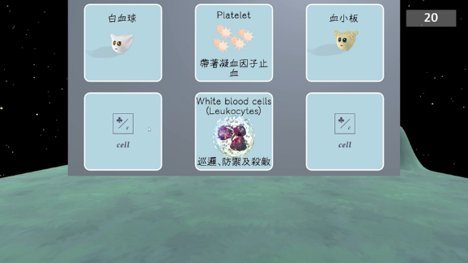

University project · TAECT 2022 fourth place
BioUtopia · Dreaming about Health and Biology
A first-person RPG that maps human organs to familiar places. Storytelling, cell characters, and four types of game challenges bring together Grade 7 biology and health education. It received fourth place at TAECT 2022 and was presented at TWELF 2023.

My contribution
Built many Unity scenes and wrote C# code. Prepared curriculum content, questions, and digital education research with teammates to complete the game.
Period：2022–2023
Goals and requirements
Cell and organ functions can be difficult to understand from textbook descriptions, while biology and health topics are often taught separately. The project connects Grade 7 content on nutrition, transport, coordination, homeostasis, and addiction prevention within one adventure.
Analogy drives the setting design: for example, bone marrow is introduced as a place where cells are born and compared with a kindergarten. Dialogue explains the mapping. These analogies support understanding without replacing a full biological explanation.
Features and workflow
Players meet a guide in a dream and explore organ-inspired settings from a first-person perspective. Approaching cell characters opens dialogue; knowledge from each scene is then used in game challenges. After the main challenges, players can revisit earlier scenes and access feedback and save options.
The team created four challenge types: matching cell-information cards, multiple-choice questions, timed true / false gates, and a hidden whack-a-mole game. Each uses different scoring and progression rules.

Technology and implementation
Unity integrates scenes, characters, dialogue, images, and animation. C# handles character interactions, event triggers, and level progression. Curriculum concepts are translated into things players can observe, operate, or answer.
The team combined Unity Asset Store and Sketchfab assets with its own materials, used 3ds Max and Mixamo for characters, and Azure text-to-speech for voices. My main responsibilities were scenes, code, and learning content.
Challenges and revisions
Development had to balance curriculum mappings, pacing, and progression rules. Incorrect multiple-choice options disappear until the correct answer is chosen, while true / false gates add time limits and require all answers to be correct. Feedback differs by challenge.
Team members tested completed stages and revised the story, interface, and bugs. Dialogue also needed to make each analogy explicit so players could connect the setting with the intended concept.
Outcomes and limitations
Completed an educational RPG with learning scenes, character dialogue, and four challenge types. It received fourth place in the TAECT 2022 digital media competition and was presented at TWELF 2023.
The TWELF 2023 paper reports game development and design before a classroom experiment had been conducted. Learning effectiveness still requires empirical evaluation.